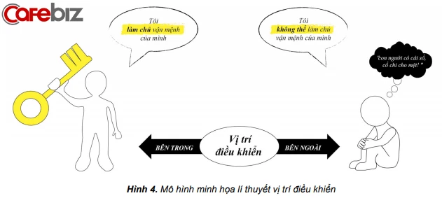

Để có những hiểu biết nhất định về việc lựa chọn nghề nghiệp cũng như có định hướng chính xác trong quá trình chọn nghề, chọn trường, trên cơ sở nghiên cứu những tài liệu hướng nghiệp uy tín, Tổ tư vấn tâm lý học đường và hướng nghiệp nhà trường trân trọng giới thiệu đến các em một số Lý thuyết hướng nghiệp như sau:
Lí thuyết mật mã Holland (Holland codes) thuộc nhóm Lí thuyết đặc tính cá nhân và đặc điểm nghề, được phát triển bởi nhà tâm lí học John Holland (1919-2008)
Và với mỗi một nhóm tính cách sẽ phù hợp với những ngành nghề khác nhau. Các em có thể tham khảo theo bảng dưới đây:
| NHÓM | TÍNH CÁCH | ĐẶC ĐIỂM | NGHỀ NGHIỆP |
|---|---|---|---|
| NHÓM KỸ THUẬT | Thực tế, đáng tin cậy, đơn giản, coi trọng truyền thống, thao tác vận động khéo léo | Có hứng thú với máy móc, thiết bị, thao tác vận động, xây dựng, sửa chữa, cắm trại, lái xe, làm việc ngoài trời | Các nghề về kiến trúc, an toàn lao động, nghề mộc, xây dựng, thủy sản, kỹ thuật, máy tàu thủy, lái xe, huấn luyện viên, nông – lâm nghiệp. |
| NHÓM NGHIÊN CỨU | Độc lập, sâu sắc, ham hiểu biết. Khả năng định hướng, khả năng tự học, tự tổ chức nghiên cứu, khả năng phân tích, viết, toán học. | Có hứng thú với khoa học, y học, toán học, nghiên cứu, đọc sách, làm ô chữ, câu đố, khai thác internet. | Các ngành thuộc lĩnh vực khoa học tự nhiên; khoa học xã hội; Y – dược; khoa học công nghệ. |
| NHÓM NGHỆ THUẬT | Sáng tạo, độc lập, độc đáo, sức tưởng tượng phong phú, khả năng âm nhạc, biểu diễn nghệ thuật. | Thích tự thể hiện, thu thập các tác phẩm nghệ thuật, tham dự các buổi biểu diễn, tham quan bảo tàng, chơi các nhạc cụ, quan tâm đến truyền thông, văn hóa. | Các ngành về văn chương; báo chí; điện ảnh; sân khấu; mỹ thuật; ca nhạc; múa; kiến trúc; thời trang; hội họa, giáo viên dạy Sử/Anh văn, bảo tàng, bảo tồn, … |
| NHÓM XÃ HỘI | Thích hợp tác, rộng lượng, phục vụ người khác. Kỹ năng nói, nghe, giảng giải và các kỹ năng làm việc với người khác | Thích làm việc với con người, tham gia các hoạt động tình nguyện, đọc các sách hoàn thiện bản thân. | Sư phạm; giảng viên, huấn luyện viên điền kinh; tư vấn – hướng nghiệp; công tác xã hội, sức khỏe cộng đồng, thuyền trưởng, thầy tu, thư viện, bác sĩ chuyên khoa, thẩm định giá, nghiên cứu quy hoạch đô thị, kinh tế gia đình, tuyển dụng nhân sự, cảnh sát, xã hội học, bà đỡ, chuyên gia về X - quang, chuyên gia dinh dưỡng … |
| NHÓM QUẢN LÝ | Quyết đoán, tự tin, năng động, thích giao lưu, ưa mạo hiểm, cạnh tranh, địa vị, có khả năng gây ảnh hưởng, thuyết phục và chỉ đạo người khác. | Có hứng thú với lĩnh vực kinh doanh, chính trị, lãnh đạo, doanh nhân | Các ngành về quản trị kinh doanh, thương mại, marketing, kế toán – tài chính, luật sư, dịch vụ khách hàng, tiếp viên hàng không, thông dịch viên, pha chế rượu, công an, bộ đội. |
| NHÓM NGHIỆP VỤ | Sống thực tế, có tổ chức, ngăn nắp, tỉ mỉ, chính xác, tin cậy, ổn định, hiệu quả. Có khả năng làm việc với các dữ liệu, số liệu | Có hứng thú trong lĩnh vực tổ chức, quản lý dữ liệu, kế toán, đầu tư, hệ thống thông tin, tham gia các hoạt động tình nguyện | Các ngành nghề về hành chính, quản trị văn phòng, kế toán, kiểm toán, thư ký, thống kê, thanh tra ngành, người giữ trẻ, điện thoại viên… |
Lý thuyết cây nghề nghiệp:
Giúp cho HS nhận thức đầy đủ về bản thân để các em chọn được nghề phù hợp với “gốc rễ”, tránh được tình trạng chọn nghề theo “quả”, chọn nghề theo cảm tính, theo ý kiến của người khác hoặc chọn nghề theo trào lưu chung.
Thực tế hiện nay cho thấy, phần lớn các em học sinh khi được hỏi: “Vì sao em học ngành này hay thích nghề này?”, câu trả lời thường là: “Vì công việc này hiện đang được xem là nóng trong thị trường”, hay “ Vì cơ hội việc làm của công việc này cao”, hoặc “Công việc này trả lương tương đối cao so với các việc khác”… Những câu trả lời trên cho thấy những HS đó đã chọn nghề theo “quả ”, mà không chọn nghề theo “rễ” của cây nghề nghiệp. Điều này là không nên bởi những “quả ngọt” của cây nghề nghiệp chỉ có được khi các em được làm công việc phù hợp với sở thích và khả năng của bản thân, hay còn gọi là “gốc rễ” của cây nghề nghiệp.
Theo lý thuyết cây nghề nghiệp, các em cần lựa chọn nghề nghiệp từ “gốc rễ”, tức là, có sự phù hợp của các yếu tố sau:
Lý thuyết hệ thống chỉ ra rằng: con người chúng ta không sống độc lập một mình. Chúng ta luôn tương tác với môi trường xung quanh và bị ảnh hưởng rất nhiều bởi những tác động từ môi trường ấy. Trong đó có ảnh hưởng trực tiếp tới việc chọn hướng học, chọn nghề của các em chính là truyền thống nghề nghiệp và hoàn cảnh gia đình và thêm nữa đó là yếu tố kinh tế - xã hội ở nơi các em đang sinh sống.
Mỗi người là một cá thể sống trong một hệ thống phức tạp, đa dạng và chịu nhiều ảnh hưởng từ các yếu tố khác nhau ở những thời điểm khác nhau. Ở mức độ cá nhân, những ảnh hưởng ấy đến từ bên trong, gồm khả năng, sở thích, cá tính, giá trị, tuổi tác, giới tính, sức khỏe… Ở mức độ xã hội, những ảnh hưởng ấy là cha mẹ, các thành viên khác trong gia đình, bạn bè, hệ thống truyền thông, mạng xã hội… Và, ở mức độ môi trường xã hội, những tác động, ảnh hưởng ấy là vị trí địa lý, hoàn cảnh kinh tế - xã hội, toàn cầu hóa…
Những quyết định trong quá khứ của mỗi người sẽ ảnh hưởng đến hiện tại, và những quyết định trong thời điểm hiện tại sẽ ảnh hưởng đến tương lai. Sự ảnh hưởng hoặc tác động của từng yếu tố chủ quan và khách quan đối với quyết định chọn nghề của mỗi người không như nhau vì nó còn tùy thuộc vào từng thời điểm, vào nhận thức, điều kiện, khả năng và phản ứng của mỗi người trước từng yếu tố.
Mô hình kế hoạch nghề là một trong các lý thuyết cơ bản trong quá trình định hướng nghề nghiệp của học sinh phổ thông. Theo đó, trong mô hình lập kế hoạch nghề có 3 bước quan trọng, nếu thực hiện tốt sẽ tạo cơ sở vững chắc cho việc chọn hướng học, chọn ngành, chọn nghề của học sinh.
Ba bước tìm hiểu trong Mô hình lập kế hoạch nghề:
• Bước đầu tiên và quan trọng nhất là HS tìm hiểu bản thân để hiểu rõ sở thích, khả năng, cá tính và giá trị nghề nghiệp.
• Bước 2: HS tìm hiểu thị trường tuyển dụng lao động để biết những công việc, những nghề đang có ở thị trường trong vùng, quốc gia, và quốc tế; Yêu cầu của những nghề đó đối với người lao động; những nghề đang được xem là có tiềm năng trong tương lai; Những kĩ năng thiết yếu mà người lao động cần phải có khi tham gia hoạt động nghề...
• Bước 3: HS tìm hiểu những tác động/ ảnh hưởng tới bản thân các em khi chọn hướng học, chọn nghề, từ gia đình đến hoàn cảnh KT-XH bởi việc chọn hướng học, chọn nghề không phụ thuộc hoàn toàn vào bản thân HS mà còn chịu tác động/ ảnh hưởng của nhiều yếu tố khách quan, nhất là hoàn cảnh GĐ và điều kiện KT-XH của địa phương, đất nước.
Sau khi hoàn tất ba bước tìm hiểu, học sinh có đủ kiến thức để bắt đầu bốn bước hành động, gồm:
• Xác định mục tiêu nghề nghiệp của bản thân;
• Ra quyết định nghề nghiệp;
• Thực hiện quyết định nghề nghiệp;
• Đánh giá xem quyết định nghề nghiệp có thực sự phù hợp với bản thân các em hay không.
Tất cả bảy bước trên có thể được hiện theo bất cứ thứ tự nào, miễn sao phù hợp với nhu cầu, khả năng của mỗi học sinh.
Một trong những lý thuyết nổi tiếng khác về định hướng nghề nghiệp là Lí thuyết ngẫu nhiên có kế hoạch của GS. Krumboltz thuộc nhóm lý thuyết “Học tập từ xã hội”. Trong đó, Krumboltz dùng lý thuyết vị trí điều khiển để khắc họa rõ nét hơn về lý thuyết ngẫu nhiên có kế hoạch, qua đó giúp người lao động hiểu được cách tạo ra sự may mắn trong quá trình phát triển sự nghiệp của bản thân.
Lí thuyết vị trí điều khiển đưa ra 2 quan điểm sống:
Lý thuyết vị trí điều khiển cho rằng, cùng một sự việc xảy ra, nhưng với người này sự việc ấy sẽ là động lực để họ tiếp tục tiến lên phía trước, nhưng với người khác, với cùng sự việc ấy thì sẽ là lý do bỏ cuộc. Đối với người có động lực => có cái nhìn tích cực => may mắn trong cuộc sống. Đối với người bỏ cuộc => có cái nhìn tiêu cực => kết quả không may mắn. Trong cuộc đời, không có sự ngẫu nhiên hay tình cờ hoàn toàn, mà sự ngẫu nhiên hay tình cờ chỉ đến khi con người tạo điều kiện hay chủ động làm cho sự ngẫu nhiên hay tình cờ ấy xảy ra mà thôi.
Có thể khái quát 2 quan điểm của Lí thuyết vị trí điều khiển như sau:
Qua lý thuyết vị trí điều khiển, các em cần nhận thấy rằng: có rất nhiều chuyện xảy ra trong cuộc đời mỗi người mà chúng ta không có khả năng tránh né hay điều khiển được. Ví dụ như ta sinh ra trong gia đình kinh tế khó khăn hay khá giả; sinh sống ở một quốc gia giàu có hay chậm phát triển; tai nạn đột nhiên xảy đến với ai đó khi họ đi ngoài đường... Nhưng, ta có toàn quyền quyết định cách ta phản ứng lại khi những chuyện ấy xảy ra. Nếu ta phản ứng một cách tích cực thì nó sẽ đem lại kết quả tích cực, tạo ra những may mắn trong quá trình lập nghiệp, và ngược lại. Nói cách khác, chúng ta không điều khiển được ngoại cảnh hay những yếu tố khách quan, nhưng chúng ta có 100% khả năng điều khiển được nội tâm mình. Vì vậy, ta có khả năng tự làm chủ vận mệnh của mình.
Hiểu rõ lý thuyết vị trí điều khiển sẽ giúp học sinh có ý chí vươn lên, biết vượt qua khó khăn, vượt qua chính mình để đạt được mục tiêu đặt ra, để thành công trên con đường nghề nghiệp của mình sau này.
Trên cơ sở nghiên cứu các lý thuyết về nghề nghiệp, với sự hướng dẫn của các thầy cô trong Tổ tư vấn tâm lý học đường và hướng nghiệp, nhóm nghiên cứu KHKT đã thiết kế dự án gồm một số bài tập trắc nghiệm giúp các em học sinh khám phá bản thân, hiểu rõ về tính cách, sở thích, năng lực của mình phù hợp với những nghề nghiệp như thế nào; hướng dẫn các bạn học sinh tìm hiểu về bản chất các nghề nghiệp cũng như về thị trường nghề nghiệp, nhu cầu về việc làm ra sao, qua đó góp phần giúp các bạn học sinh có những quyết định sáng suốt trong việc lựa chọn nghề nghiệp.
Các em hãy cùng hoàn thành những bài tập trắc nghiệm sau đây để có những quyết định sáng suốt nhất nhé!